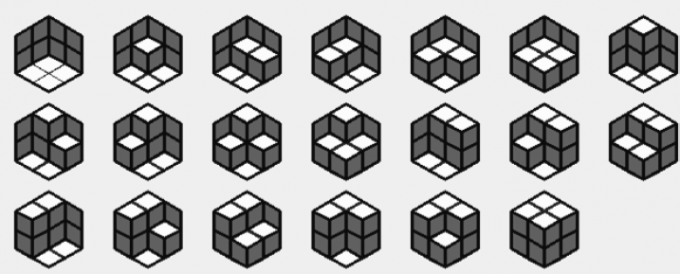
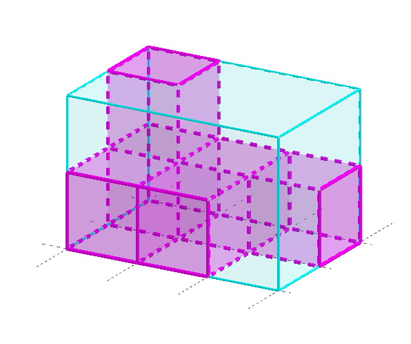

你需要求出，对于对边长分别为 $a, b, c$ 的划分为等边三角形的六边形，有多少种不同的使得它们可以划分为菱形的方案。答案对 $998244353$ 取模。
这里给一个例子，$a = b = c = 2$ 时，有 $20$ 种不同的划分方案：
共一行，包含三个正整数 $a, b, c$ ($a, b, c \leq 10^6$)。
输出一行一个整数，表示不同的划分方案数模 $998244353$ 的值。
如果你的空间想象力不错的话，可以发现这个菱形划分的方案可以看成是在一个三维空间中的一个 $a \times b \times c$ 的长方体 (即底面为 $a \times b$ 的矩形，高为 $c$ 的长方体) 区域中放入了若干个单位立方体，如下图所示：
由于需要满足三视图中的单调性 (即没有凹下去的块)，因此 (设俯视图中第 $i$ 行第 $j$ 列的高度为 $h_{i, j}$) 这些立方体的摆放需要满足 $h_{i, j} \geq h_{i, j + 1}, h_{i, j} \geq h_{i + 1, j}$。
于是我们就把问题转化成了：有多少个 $a \times b$ 的矩阵 $h_{i, j}$ ($1 \leq i \leq a; 1 \leq j \leq b$)，满足 $h_{i, j} \geq h_{i, j + 1}, h_{i, j} \leq h_{i + 1, j}$ 且 $0 \leq h_{i, j} \leq c$。
(ps: 下面定义 $\displaystyle n ? = \prod_{i=1}^n i !$)
根据 Young 表的知识，不难发现，$a \times b$ 的矩阵本质上也是一个 Young 表，因此我们把问题转化为了 Young 表上的填数问题。
不过，Young 表填数的公式只有两个：标准 Young 表填数公式 (钩子公式) 以及 半标准 Young 表填数公式 (钩子公式的变种) (ps: "标准 Young 表" 指的是 $h_{i, j}$ 恰为一个排列的 Young 表；"半标准 Young 表" 指的是 $h_{i, j} \leq h_{i, j + 1} \wedge h_{i, j} < h_{i + 1, j}$ 的 Young 表)，而本题中的 Young 表两边都可以取等，那该怎么办呢？
由于这个 Young 表形状的特殊性，我们可以做一个转化：定义 $h'_{i, j} = h_{i, j} + i$。这样，就有 $h'_{i, j} \leq h'_{i, j + 1} \wedge h'_{i, j} < h'_{i + 1, j}$，即符合半标准 Young 表的性质了。
对于新的半标准 Young 表 $h'_{i, j}$，每个位置需要满足 $1 \leq h'_{i, j} \leq a + c$。而且，对于满足 $1 \leq h'_{i, j} \leq a + c$ 的半标准 Young 表，将其 "逆回去" ($h_{i, j} = h'_{i, j} - i$) 所得到的 Young 表恰好符合原来的三个条件。
因此，我们又在原来的 Young 表和新的 Young 表之间建立了一个一一对应，现在我们只需要数清楚有多少个新 Young 表即可。
由钩子公式的变种，$$ ans = \prod_{i=1}^a \prod_{j=1}^b \frac {a + c + j - i} {\operatorname{hook} \left( i, j \right)} \tag 1 \label 1 $$ (其中 $\operatorname{hook} \left( i, j \right)$ 为 $\left( i, j \right)$ 格的钩长)
不难发现，$\operatorname{hook} \left( i, j \right) = \left( a - i \right) + \left( b - j \right) + 1$，因此，所有格子的钩长乘积等于 $$ \prod_{i=1}^a \prod_{j=1}^b \operatorname{hook} \left( i, j \right) = \prod_{i=1}^a \prod_{j=1}^b \left( \left( a - i \right) + \left( b - j \right) + 1 \right) = \prod_{i=1}^a \frac {\left( a - i + b \right) !} {\left( a - i \right) !} = \frac {\left( a + b - 1 \right) ?} {\left( a - 1 \right) ? \left( b - 1 \right) ?} $$
类似地，考虑分子的乘积，有 $$ \prod_{i=1}^a \prod_{j=1}^b \left( a + c + j - i \right) = \prod_{i=1}^a \frac {\left( a + c + b - i \right) !} {\left( a + c - i \right) !} = \frac {\left( a + b + c - 1 \right) ? \left( c - 1 \right) ?} {\left( a + c - 1 \right) ? \left( b + c - 1 \right) ?} $$
将其带入 $\eqref 1$ 式，得 $$ ans = \prod_{i=1}^a \prod_{j=1}^b \frac {a + c + j - i} {\operatorname{hook} \left( i, j \right)} = \frac {\left(a + b + c - 1 \right) ? \left( a - 1 \right) ? \left( b - 1 \right) ? \left( c - 1 \right) ?} {\left( a + b - 1 \right) ? \left( b + c - 1 \right) ? \left( c + a - 1 \right) ?} $$
由于它是一个关于 $a, b, c$ 完全对称的式子，因此我们更有理由相信这个结果就是正确的。
于是我们只需要处理出 $n ?$ 和 $\left( n ? \right)^{-1}$ 即可，使用快速求逆元的技巧，总时间复杂度 $O \left( n \right)$。
#include <bits/stdc++.h>
typedef long long ll;
const int N = 3000054, mod = 998244353;
int fact[N], finv[N];
int pact[N], pinv[N];
ll PowerMod(ll a, int n, ll c = 1) {for (; n; n >>= 1, a = a * a % mod) if (n & 1) c = c * a % mod; return c;}
void init(int n) {
int i;
for (*fact = i = 1; i <= n; ++i) fact[i] = (ll)fact[i - 1] * i % mod;
finv[n] = PowerMod(fact[n], mod - 2);
for (i = n; i; --i) finv[i - 1] = (ll)finv[i] * i % mod;
for (*pact = i = 1; i <= n; ++i) pact[i] = (ll)pact[i - 1] * fact[i] % mod;
pinv[n] = PowerMod(pact[n], mod - 2);
for (i = n; i; --i) pinv[i - 1] = (ll)pinv[i] * fact[i] % mod;
}
int main() {
int a, b, c;
scanf("%d%d%d", &a, &b, &c), init(a + b + c - 1);
printf("%lld\n", (ll)pact[a + b + c - 1]
* pinv[a + b - 1] % mod * pinv[b + c - 1] % mod * pinv[c + a - 1] % mod
* pact[a - 1] % mod * pact[b - 1] % mod * pact[c - 1] % mod);
return 0;
}
坑1：求逆元的时候可以使用 "离线快速求逆元" 的技巧，先求出乘积的逆元再倒推回去，这样复杂度就变成了 $O \left( n + \log mod \right)$ 而不是 $O \left( n \log mod \right)$。